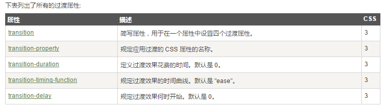

边框
圆角
盒阴影
边界图片
平铺
拉伸
圆角详解
CSS3 border-radius - 指定每个圆角
- 四个值: 第一个值为左上角，第二个值为右上角，第三个值为右下角，第四个值为左下角
- 三个值: 第一个值为左上角, 第二个值为右上角和左下角，第三个值为右下角
- 两个值: 第一个值为左上角与右下角，第二个值为右上角与左下角
- 一个值： 四个圆角值相同
也可用类似border-top-left-radius单独指定某个角的弧度
CSS3背景
background-image属性
CSS3中可以通过background-image属性添加背景图片。
不同的背景图像和图像用逗号隔开，所有的图片中显示在最顶端的为第一张。
background-image: url(img_flwr.gif), url(paper.gif);
background: url(img_flwr.gif) right bottom no-repeat, url(paper.gif) left top repeat;
background-size 属性
background-size指定背景图像的大小。CSS3以前，背景图像大小由图像的实际大小决定。
CSS3中可以指定背景图片，让我们重新在不同的环境中指定背景图片的大小。您可以指定像素或百分比大小。
你指定的大小是相对于父元素的宽度和高度的百分比的大小。
background-Origin属性
background-Origin属性指定了背景图像的位置区域。
content-box, padding-box,和 border-box区域内可以放置背景图像
多个背景图片
background-image:url(img_flwr.gif),url(img_tree.gif);
background-clip属性
background-clip背景剪裁属性是从指定位置开始绘制
渐变（Gradients）
CSS3 渐变（gradients）可以让你在两个或多个指定的颜色之间显示平稳的过渡。
以前，你必须使用图像来实现这些效果。但是，通过使用 CSS3 渐变（gradients），
你可以减少下载的事件和宽带的使用。此外，渐变效果的元素在放大时看起来效果更好，因为渐变（gradient）是由浏览器生成的。
CSS3 定义了两种类型的渐变（gradients）：
线性渐变（Linear Gradients）- 向下/向上/向左/向右/对角方向
径向渐变（Radial Gradients）- 由它们的中心定义
线性渐变
为了创建一个线性渐变，你必须至少定义两种颜色结点。颜色结点即你想要呈现平稳过渡的颜色。同时，你也可以设置一个起点和一个方向（或一个角度）。
语法：background: linear-gradient(direction, color-stop1, color-stop2, ...);
默认从上到下
左-右
坐上到右下
使用角度
如果你想要在渐变的方向上做更多的控制，你可以定义一个角度，而不用预定义方向（to bottom、to top、to right、to left、to bottom right，等等）
语法：background: linear-gradient(angle, color-stop1, color-stop2);
角度是指水平线和渐变线之间的角度，逆时针方向计算。换句话说，0deg 将创建一个从下到上的渐变，90deg 将创建一个从左到右的渐变。
但是，请注意很多浏览器(Chrome,Safari,fiefox等)的使用了旧的标准，即 0deg 将创建一个从左到右的渐变，90deg 将创建一个从下到上的渐变。换算公式 90 - x = y 其中 x 为标准角度，y为非标准角度。
旋转180°和默认相同
使用多个颜色结点
多色渐变可设置比例
使用透明度（Transparency）
CSS3 渐变也支持透明度（transparency），可用于创建减弱变淡的效果。
为了添加透明度，我们使用 rgba() 函数来定义颜色结点。rgba() 函数中的最后一个参数可以是从 0 到 1 的值，它定义了颜色的透明度：0 表示完全透明，1 表示完全不透明。
透明度渐变
重复的线性渐变
repeating-linear-gradient() 函数用于重复线性渐变：
重复渐变
径向渐变
径向渐变由它的中心定义。
为了创建一个径向渐变，你也必须至少定义两种颜色结点。颜色结点即你想要呈现平稳过渡的颜色。
同时，你也可以指定渐变的中心、形状（原型或椭圆形）、大小。默认情况下，渐变的中心是 center（表示在中心点），
渐变的形状是 ellipse（表示椭圆形），渐变的大小是 farthest-corner（表示到最远的角落）。
语法：background: radial-gradient(center, shape size, start-color, ..., last-color);
均匀分布：
径向渐变
不均匀分布：
径向渐变
设置形状
shape 参数定义了形状。它可以是值 circle 或 ellipse。其中，circle 表示圆形，ellipse 表示椭圆形。默认值是 ellipse。
background: radial-gradient(circle, red, yellow, green); /* 标准的语法 */
不同尺寸大小关键字的使用
size 参数定义了渐变的大小。它可以是以下四个值：
closest-side、
farthest-side、
closest-corner、
farthest-corner
background: radial-gradient(60% 55%, farthest-side,blue,green,yellow,black);
重复的径向渐变
repeating-radial-gradient() 函数用于重复径向渐变：
background: repeating-radial-gradient(red, yellow 10%, green 15%);
文本效果
字体
@font-face 规则
@font-face
{
font-family: myFirstFont;
src: url(sansation_light.woff);
}
2D转换
translate() 方法
translate()方法，根据左(X轴)和顶部(Y轴)位置给定的参数，从当前元素位置移动。
transform: translate(50px,100px);
rotate() 方法
rotate()方法，在一个给定度数顺时针旋转的元素。负值是允许的，这样是元素逆时针旋转。
transform: rotate(30deg);
scale() 方法
scale()方法，该元素增加或减少的大小，取决于宽度（X轴）和高度（Y轴）的参数：
transform: scale(2,4);转变宽度为原来的大小的2倍，和其原始大小4倍的高度
skew() 方法
skew()方法，该元素会根据横向（X轴）和垂直（Y轴）线参数给定角度：
transform: skew(30deg,20deg);绕X轴和Y轴周围20度30度的元素。
matrix() 方法
matrix()方法和2D变换方法合并成一个。
matrix 方法有六个参数，包含旋转，缩放，移动（平移）和倾斜功能。
3D转换
过渡

动画
@keyframes 规则
要创建CSS3动画，你将不得不了解@keyframes规则。
@keyframes规则是创建动画。 @keyframes规则内指定一个CSS样式和动画将逐步从目前的样式更改为新的样式。
语法：animation: myfirst 5s;
多列
用户界面
弹性盒子
多媒体查询